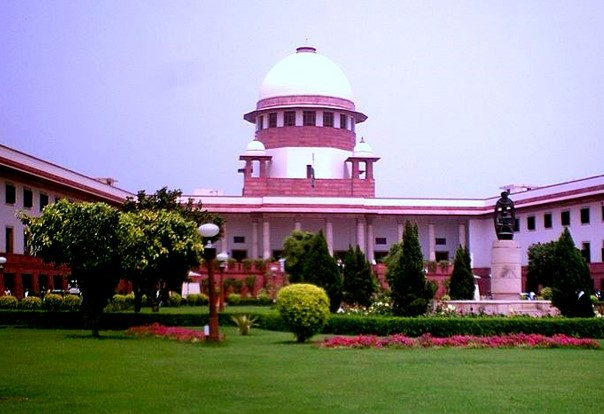
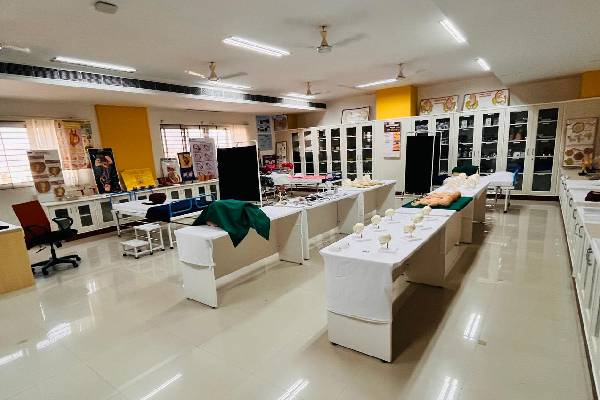
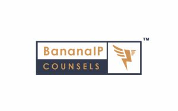

Programs
Faculty of Law, PES University offers five-year integrated law programs spread across ten semesters approved by Bar Council of India.
- BA. LL.B (Hons.)
- BBA. LL.B (Hons.)
- B.Com. LL.B (Hons.)
Get In Touch
Have questions about BBA. LL.B (Hons.), BA. LL.B (Hons.), B.Com. LL.B (Hons.) admissions?
Share a few details and our admissions counsellors will walk you through eligibility, fees, scholarships and the application timeline — no obligation.
- Fast Response — a counsellor calls back within 24 hours.
- One-on-One Guidance — personalised help with eligibility and documentation.
- No Obligation — ask questions before you decide to apply.
Fill this in and we'll reach out shortly.
Overview
BBA. LL.B (Hons.), BA. LL.B (Hons.), B.Com. LL.B (Hons.)
Faculty of Law, PES University was established in 2017, under the guidance of our Late Founder Dr. M.R Doreswamy, with a vision of establishing a global law school. The institution is also guided and mentored by several legal luminaries like Justice M.N Venkatachaliah, former Chief Justice, Supreme Court of India.
This full-time program emphasizes the interdisciplinary study of law and experiential learning, bridging theoretical knowledge with practical application. It is designed to equip students with the skills and expertise needed to address the challenges of the 21st century and excel in the legal profession. The academic year typically begins in the first week of August.


About the Programme
Program Highlights
- 5 Year Integrated Honors Programme
- UG Programs with Specializations
- Industry blended Curriculum
- Research driven learning
- Running Internship
About the Programme
WHY Pursue Law from PESU?
The Faculty of Law, is working with an intent to create an enlightened and industrious fraternity of law students seeking to make an impact in the field of law and contribute constructively to society. This endeavour was undertaken with an intent to blend academic rigour and excellence with application and practical exposure in order to create a holistic experience for learning and to produce a professionally superior and ethically strong workforce.
About the Programme
BBA. LL.B (Hons.)
Curriculum
Curriculum Structure
- English – Law, Language & Literature
- Legal Methods & History of Courts
- Law of Contracts-I
- Law of Tort, Motor Vehicles and Consumer Protection Laws
- Principles of Business Management
- Business Economics
- Workshop/Certificate Course – Research Methodology
- Kannada Kali/Legal Kannada
- Jurisprudence
- Law of Contract -II
- Criminal Law-I
- Managerial Psychology
- Business Communication
- Internship
- Workshop/Certificate Course – World Constitutions
- Criminal Law-II
- Family Law-I
- Constitutional Law-I
- Law of property
- Financial Accounting
- Marketing & Services Management
- Workshop/Certificate Course – Women and Law
- Family Law-II
- Constitutional Law-II
- Interpretation of Statutes
- Civil Procedure Code
- Human Resource Management
- Business Statistics & Research Analysis
- Internship
- Workshop/Certificate Course – Penology & Victimology
- Law of Evidence
- Administrative Law
- Information Technology and Cyber Law
- Law of Property
- Strategic Management
- Indian Financial System
- Workshop/Certificate Course – Right to Information
- Banking Law
- Intellectual Property Rights
- Company Law
- Clinical Course-I – Drafting, Pleading & Conveyance
- Global Business Environment
- Start-Up & Entrepreneurship Development
- Internship
- Workshop/Certificate Course – Data Privacy Law
- Labour & Industrial Law – I
- Environmental Law
- International Law
- Competition Law
- Specialization Subject 1
- Specialization Subject 2
- Workshop/Certificate Course – White Collar Crimes
- Labour & Industrial Law – II
- Human Rights Law & Practice
- Law of Taxation
- Clinical Course III- Alternative Dispute Resolution
- Specialization Subject 3
- Specialization Subject 4
- Internship
- Workshop/Certificate Course – Health & Law
- Clinical Course – Professional Ethics
- Technology Law
- Specialization Subject 5
- Specialization Subject 6
- Specialization Subject 7
- Specialization Subject 8
- Workshop/Certificate Course – Sports Law
- Clinical Course-IV Moot Court and Internship
- Workshop/Certificate Course – Entertainment Law
Choose Your Path
Specializations Courses
- International Trade Law
- Commercial Arbitration
- Investment Law
- Financial Market Regulation
- Insurance Law
- Insolvency & Bankruptcy Laws
- Merger & Acquisition
- Corporate Governance
- Law of Industrial Design
- Law of Copyright & Related rights
- Law of Patent & Practice
- Law of Trademark
- IP & Entertainment Laws
- Geographical Indications, Plant Varieties & Farmers’ Rights
- Other Forms of IPR
- Law of Biodiversity and Traditional Knowledge
- Media & Law
- Indian Federalism
- Affirmative Action and Discriminative Justice
- Comparative Constitutional Law
- International Human Rights
- Local Self Government Law
- Health Law
- Legislative Drafting
- Criminal Psychology
- Penology & Victimology
- Forensic Science and Law
- Comparative Criminal Procedure
- White Collar Crime
- Witness Examination
- Human Rights and Criminal Justice
- Law and Organized Crime
About the Programme
BA. LL.B (Hons.)
Curriculum
Curriculum Structure
- English – Law, Language & Literature
- Legal Methods & History of Courts
- Law of Contracts-I
- Law of Tort, Motor Vehicles and Consumer Protection Laws
- Political Science and Governance
- Introduction to Sociology
- Workshop/Certificate Course – Research Methodology
- Kannada Kali/Legal Kannada
- Jurisprudence
- Law of Contract -II
- Criminal Law-I
- Political Thought and Political Thinkers
- Society and Law
- Internship
- Workshop/Certificate Course – World Constitutions
- Criminal Law-II
- Family Law-I
- Constitutional Law-I
- Law of property
- Political Theory & Obligation
- Indian History
- Workshop/Certificate Course – Women and Law
- Family Law-II
- Constitutional Law-II
- Interpretation of Statutes
- Civil Procedure Code
- Indian Government & Politics
- Principles of Economics
- Internship
- Workshop/Certificate Course – Penology & Victimology
- Law of Evidence
- Administrative Law
- Information Technology and Cyber Law
- Public Administration
- Indian Economy
- Workshop/Certificate Course – Right to Information
- Banking Law
- Intellectual Property Rights
- Clinical Course-I – Drafting, Pleading & Conveyance
- International Relations
- Macro Economics
- Internship
- Workshop/Certificate Course – Data Privacy Law
- Labour & Industrial Law – I
- Environmental Law
- International Law
- Competition Law
- Specialization Subject 1
- Specialization Subject 2
- Workshop/Certificate Course – White Collar Crimes
- Labour & Industrial Law – II
- Human Rights Law & Practice
- Law of Taxation
- Clinical Course III- Alternative Dispute Resolution
- Specialization Subject 3
- Specialization Subject 4
- Internship
- Workshop/Certificate Course – Health & Law
- Clinical Course – Professional Ethics
- Technology Law
- Specialization Subject 5
- Specialization Subject 6
- Specialization Subject 7
- Specialization Subject 8
- Workshop/Certificate Course – Sports Law
- Clinical Course-IV Moot Court and Internship
- Workshop/Certificate Course – Entertainment Law
Choose Your Path
Specializations Courses
- International Trade Law
- Commercial Arbitration
- Investment Law
- Financial Market Regulation
- Insurance Law
- Insolvency & Bankruptcy Laws
- Merger & Acquisition
- Corporate Governance
- Law of Industrial Design
- Law of Copyright & Related rights
- Law of Patent & Practice
- Law of Trademark
- IP & Entertainment Laws
- Geographical Indications, Plant Varieties & Farmers’ Rights
- Other Forms of IPR
- Law of Biodiversity and Traditional Knowledge
- Media & Law
- Indian Federalism
- Affirmative Action and Discriminative Justice
- Comparative Constitutional Law
- International Human Rights
- Local Self Government Law
- Health Law
- Legislative Drafting
- Criminal Psychology
- Penology & Victimology
- Forensic Science and Law
- Comparative Criminal Procedure
- White Collar Crime
- Witness Examination
- Human Rights and Criminal Justice
- Law and Organized Crime
About the Programme
B.Com LLB (Hons.)
Curriculum
Curriculum Structure
- English – Law, Language & Literature
- Legal Methods & History of Courts
- Law of Contracts-I
- Law of Tort, Motor Vehicles and Consumer Protection Laws
- Financial Accounting
- Business Organisation & Management
- Kannada Kali / Legal Kannada / Foreign Language
- Law of Contracts-II
- Law of Crimes-I
- Jurisprudence
- Corporate Accounting
- Business Economics
- Family Law – I
- Interpretation of Statutes and Principles of Legislation
- Constitutional Law - I
- Criminal Law - II
- Cost & Management Accounting
- Business Statistics
- Family Law - II
- Constitutional Law - II
- Law of Property
- Civil Procedure Code and Limitation Act
- Financial Management
- Principles of Taxation
- Law of Evidence
- Administrative Law
- Information Technology & Cyber Law
- Drafting Pleading and Conveyancing (Clinical I)
- Auditing & Assurance
- Indian Financial System & Capital Markets
- Intellectual Property Law
- Company Law
- Environmental Law
- Professional Ethics (Clinical Course II)
- Corporate Finance
- Entrepreneurship & Business Environment
- Labour & Industrial Law – I
- Public International Law
- Competition Law
- Alternative Dispute Resolution (Clinical Course III)
- Law of Industrial Design / Insurance Law
- Law of Copyright & Related Rights (IP Law) / Maritime Law
- Labour & Industrial Law – II
- Banking Law
- Law of Taxation
- Law of Trademark (IP Law) / International Trade Law
- Law of Patent & Practice (IP Law) / Commercial Arbitration
- Human Rights and Practice
- Intellectual Property and Entertainment Laws / Mergers & Acquisition
- Geographical Indication / Insolvency and Bankruptcy
- Other Forms of IPR / Investment Law
- Law of Biodiversity and Traditional Knowledge / Corporate Governance
- Clinical Course IV – Moot Court and Internship
Choose Your Path
Specializations Courses
- International Trade Law
- Commercial Arbitration
- Investment Law
- Financial Market Regulation
- Insurance Law
- Insolvency & Bankruptcy Laws
- Merger & Acquisition
- Corporate Governance
- Principles of IPR
- Law of Copyright & Related rights
- Law of Patent & Practice
- Law of Trademark
- IP & Entertainment Laws
- Geographical Indications, Plant Varieties & Farmers’ Rights
- Other Forms of IPR
- Law of Biodiversity and Traditional Knowledge
- Criminal Psychology
- Penology & Victimology
- Forensic Science
- Comparative Criminal Procedure
- White Collar Crimes
- Witness Examination
- Human Rights and Criminal Justice
- Law and Organized Crime
- Media & Law
- Indian Federalism
- Affirmative Action and Discriminative Justice
- Comparative Constitution
- International Human Rights
- Local Self Government including Panchayet Administration
- Health Law
- Legislative Drafting
- Media Law
- Information Technology and Cyber Law
- Competition Law
- Banking Law
- Human Rights Law and Practice
- Conflict of Laws
- Medical Law
- Water Law
- Real Estate Law
About the Programme
Nature of Collaboration

<div class="position-absolute z-index-3" style="top: 50%;"> <div data-plugin-float-element data-plugin-options="{'startPos': 'bottom', 'speed': 0.1, 'transition': true, 'transitionDuration': 1000, 'isInsideSVG': true}"> <img src="img/blog/square/blog-7.jpg" style="max-width: 200px;" class="appear-animation border-radius-2 box-shadow-3" width="500" alt="" data-appear-animation="expandIn" data-appear-animation-delay="300" data-appear-animation-duration="600ms" /> </div> </div> <div class="position-relative z-index-2"> <img src="img/blog/square/blog-11.jpg" class="appear-animation border-radius-2 box-shadow-3" width="500" alt="" data-appear-animation="expandIn" data-appear-animation-duration="600ms" /> </div> <div class="patterns opacity-7 position-absolute z-index-1 d-none d-md-block" style="bottom: -8%; right: 9%;"> <div data-plugin-float-element data-plugin-options="{'startPos': 'top', 'speed': 0.1, 'transition': true, 'transitionDuration': 1000, 'isInsideSVG': true}" style="width: 310px; height: 170px;"> <svg width="100%" height="100%"> <defs> <pattern id="dots" x="0" y="0" width="18" height="18" patternUnits="userSpaceOnUse"> <circle fill="#0088cc" cx="1.5" cy="1.5" r="1.5" /> </pattern> </defs> <rect x="0" y="0" width="100%" height="100%" fill="url(#dots)" /> </svg> </div> </div> <div class="patterns opacity-7 position-absolute z-index-1 d-none d-md-block" style="top: -10%; left: -36%;"> <div data-plugin-float-element data-plugin-options="{'startPos': 'top', 'speed': 0.1, 'transition': true, 'transitionDuration': 1000, 'isInsideSVG': true}" style="width: 310px; height: 170px;"> <svg width="100%" height="100%"> <defs> <pattern id="dots2" x="0" y="0" width="18" height="18" patternUnits="userSpaceOnUse"> <circle fill="#CCC" cx="1.5" cy="1.5" r="1.5" /> </pattern> </defs> <rect x="0" y="0" width="100%" height="100%" fill="url(#dots2)" /> </svg> </div> </div> - Core Courses:
All courses are generally for four credits. Each student is required to successfully complete a total of 220 credits, comprising a combination of core courses and specialization courses, to fulfil the requirements of the program. These courses include classroom instruction and contuness assement comprising of work sheet, reserach papers, presentations, moot court exercises class partisipation and other and incorporate a continuous assessment component comprising of assessment, research papers, presentations, class participation, moot court exercises, response papers and related academic activities.
Every student has to complete a total of 220 credits comprise combination of core and specialization courses.
- Internships:
The internship program is designed to immerse students in the practical aspects of legal practice, bridging the gap between theoretical knowledge and real-world application. “Students can undertake internships in various settings, including judicial internships, administrative offices, quasi-judicial bodies, police stations and correctional institutions, corporate law firms, legal services centers, various commissions like Law Commission and Human Rights Commission, think tanks, research institutions, and non-governmental organizations.
The program focuses on developing essential professional skills, understanding professional ethics, addressing social responsibility, and managing challenging situations in both practical and professional contexts. Internships provide students with opportunities to explore diverse areas of law and various legal practice environments, helping them make informed decisions about their future career paths. Additionally, internships often lead to valuable professional connections and potential job opportunities.
Workshop and Certificate Programs
TTo allow students to explore their areas of interest in a systematic and comprehensive manner, PESU offers a range of WORKSHOP AND CERTIFICATE COURSES. In addition to PESU’s own faculty, WORKSHOP AND CERTIFICATE COURSES are often taught by practitioners and other experts.
Assessment
The assessment system of the course is designed to cultivate legal acumen and critical thinking in students. It comprises two components: internal assessments and end-semester assessments, each carrying equal weightage. PES University employs a continuous assessment approach to foster consistent learning and engagement throughout the program.
Running Internships
The Running Internship Programme is a structured professional internship initiative that enables students to undertake internships alongside their regular academic commitments and outside scheduled class hours. It facilitates the application of classroom knowledge to real-world legal and professional settings, strengthens legal research, drafting, communication, and professional skills, and promotes an understanding of professional ethics and workplace responsibilities.
Internship assistance will be provided by the Internship and Placement Centre Faculty of Law with the request of the student.About the Programme
Programme Differentiators
Curriculam Design: Specialization with Dynamic pedagogy
Our academic programmes integrate specialized honours courses with a wide range of experiential and professional learning initiatives, including legal services activities, industrial visits, seminars, expert talk and interactions with distinguished members of the legal luminaries. Each course is designed to develop essential competencies in legal research, advocacy, communication, critical thinking, and problem- solving. Through research paper writing, class presentations, moot court exercises, case simulations, and other practice-oriented activities, students are encouraged to apply legal knowledge to real-world situations and develop the skills, professional confidence, and practical understanding necessary for a successful career in law.
PESU Exposure
a. PESU Legal Eagle –
In their second year, students engage in the Contemporary Law Forum, meeting weekly in small groups to explore, debate, and critically examine emerging laws and landmark judicial decisions. Each session fosters an intellectually vibrant exchange of diverse perspectives, arguments, and interpretations of contemporary legal developments. Through this programme, students build confidence in articulating ideas, challenging perspectives, and connecting evolving legal principles with real-world developments.
b. Student-Centric Clubs and Committees
A vibrant collection of student-centric clubs and committees organizes events, conferences, competitions and skills-building workshops.
c. Legal Services
Legal Services Clinics are established with a twin objective of inculcating an attitude amongst the students to provide effective legal and para legal services to the poor and marginalized sections of the society who have difficulty accessing the judicial system. Additionally, it also provides a centre to improve the clinical legal skills of the students. Demonstrating our commitment to society, we have adopted five villages to provide legal services to the under privileged.
Teaching and Learning Process
a. Research-Driven Learning – Essential Skill Development
Research is fundamental to the lawyer’s craft. At PES University, students have access to premier national and international law databases, including Manupatra, SCC Online, Hein Online, LexisNexis, EBC Reader, EBSCO and JSTOR. This access supports comprehensive research training, with elective courses across four specialized groups, enabling students to tailor their expertise.
b. Integrated Internship Program:
Our experiential learning ecosystem takes legal education beyond the classroom through moot courts, trial advocacy, client counselling, read-a-thons, hackathons, certificate programmes, legal services, field visits, and workshops. Through presentations, research papers, and interactions with legal luminaries and practitioners, students gain first-hand exposure to diverse perspectives and the realities of legal practice.
These experiences enable students to translate legal theory into practice while strengthening legal reasoning, research, drafting, communication, advocacy, problem-solving, collaboration, and professional judgment, preparing them to become confident, practice-ready, and socially conscious legal professionals.
c. Zero Hour – Insights from Leading Minds
Every week, students engage with accomplished professionals from diverse fields, including civil servants, judges, advocates, policymakers, industry leaders, and subject-matter experts, through insightful sessions on contemporary legal and interdisciplinary issues. The programme brings together distinguished voices from law, public policy, management, the arts, and other professional domains, exposing students to varied perspectives and real-world experiences. These interactions enrich classroom learning while providing students with opportunities to build meaningful professional connections, seek mentorship, and gain valuable insights into diverse career pathways.
About the Programme
Workshops and Certificate Courses
Careers
Career Prospects
After completion of the 5 year BA/BBA/B.Com LLB (Hons.), the students can choose any of the given legal profiles across Judiciary, Corporate, and can even take up litigation as their career.
- Judges Chamber
- Litigation
- Arbitration Centre
- Law Commission
- Law Ministry
- NGO
- UNO
- Think Tanks
- Corporate Sector
- IPR Firms
- In-House Counsel
Placements
Placement Opportunities & Career Assistance
Placements have always been the USP of PES University. Professional placement assistance will be provided through the centralised placement cell of the university, along with organised training in soft skills, aptitude, etiquette, resume building, etc., from the first semester itself to instill the necessary qualities for students to succeed in campus placements.
IN ADDITION, THE FOLLOWING WILL BE EXTENDED TO ALL OUR BBA. LL.B (HONS), BA. LL.B (HONS), B.Com LLB (HONS) STUDENTS:
The Faculty of Law through the Departmental Centre for Internship and Placement works closely with various advocates, industries, firms, governmental organizations, policy centers and think tanks in order to secure diverse internships and placements. The curriculum structure of the Faculty Of Law is designed in such a way where its last semester( 10th Semester) is wholly dedicated for assessment internship which aims at enhancing student employability by providing them with practical exposure and facilitating their absorption into the industry.
RESUME BUILDING AND INTERVIEW WORKSHOPS
Career assistance includes workshops on resume building, interview skills, and effective communication, preparing students for the competitive job market.
MOCK INTERVIEWS
The university conducts mock interview sessions to help students gain confidence and polish their interview techniques. Feedback from industry experts is provided to help students refine their skills.
INTERNSHIP OPPORTUNITIES
The university facilitates internships with leading organisations, allowing students to gain practical experience, apply classroom knowledge, and establish connections within the industry.
RUNNING INTERNSHIPS
This unique program ensures to dissolve the gap between the student graduation and industry absorption.
EXAM SUPPORT
Recognising the significance of the BBA. LL.B (Hons), BA. LL.B (Hons), B.Com LLB (Hons) qualification, the university offers dedicated support for BBA. LL.B (Hons), BA. LL.B (Hons), B.Com LLB (Hons) exam preparation, including study materials, practice exams, and guidance from experienced faculty.
LEVERAGE OF OUR ALUMNI NETWORK
Graduates benefit from a strong and active alumni network that provides mentorship, networking opportunities, and insights into various career paths. Alumni often play a pivotal role in connecting current students with employment opportunities.
CAREER COUNSELING
The university offers personalized career counselling services to help students identify their strengths, interests, and career goals. This guidance assists students in making informed decisions about their professional journeys.




Financial Support
Merit scholarships, awarded on performance
Over ₹140 crores in merit scholarships have been given to PES University students since 2014.
Merit Scholarships
Awarded on CGPA / SGPAProf. MRD Scholarships
Merit Certificate + 50% Tuition Fee Refund for Top 5% of the Students based on their CGPA.
Prof. CNR Rao Scholarships
Merit Certificate + 40% Tuition Fee Refund for the next 20% of the Students based on their SGPA.
Distinction Awards
Merit Certificate for Students securing 7.75+ SGPA.
PES Loyalty Program
Awarded on family / institutional ties, every year of studyPES Employees
Children of full-time staff, 5+ years employment.
PES Institution Students
Graduates of any PES institution or sister concern.
Siblings of Students
Siblings of currently enrolled PES students.
Alumni Family
Siblings and children of PES University alumni.
University Highlights
Recognition beyond the programme
The accreditations and rankings behind PES University as a whole.
University in Karnataka
Among new universities under 5 years, ranked by KSURF.
NAAC Accredited
PES University holds NAAC's top-grade accreditation nationally.
B-School in Karnataka
Times of India B-School Rankings, 2021.
Most Preferred B-School
Second only to IIM Bangalore among B-School aspirants, per Times of India.